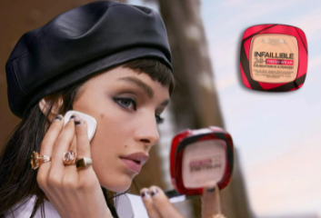
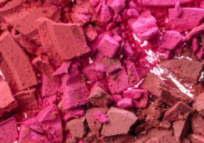
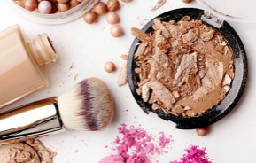
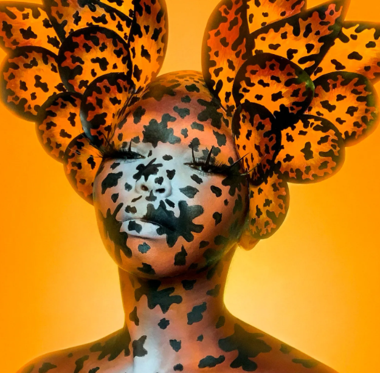
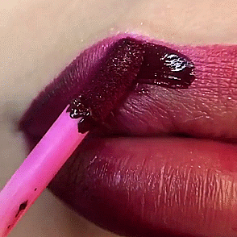
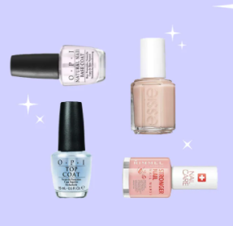
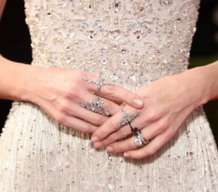
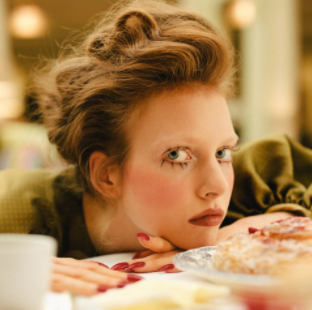
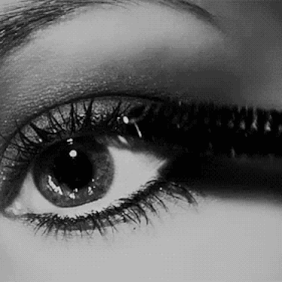
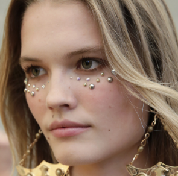

ELLX
SIGN IN
NOVEDADES
LOS MÁS VENDIDOS
ROSTRO
OJOS
LABIOS
MANICURA
COMPRAR
CLUB
GALERÍA
ÚLTIMAS NOTICIAS
OJOS
Zöe Kravitz y el 'eyeliner' tendencia para primavera con el que ser toda una 'Catwoman'

ROSTRO
Premios Goya 2022: los maquilladores nos cuentan 9 trucos infalibles para la alfombra roja

ROSTRO
Kiko Milano saca su lado más dulce con una nueva apuesta inspirada en el chocolate
LABIOS
El secreto de belleza de Marilyn Monroe

ROSTRO
Un maestro de la naturalidad
NO TE PUEDES PERDER
LABIOS
Prevenidos, cámara y ¡acción! Una barra de labios de película

ROSTRO
Estrella de Tik Tok, maestra de las transformaciones

LABIOS
Así son los labiales de larga duración superventas en Amazon México
TENDENCIAS MANICURA PRIMAVERA-VERANO
MANICURA
Emma Corrin no fue la única: las ‘uñas garra’, protagonistas de la alfombra roja

MANICURA
Los mejores endurecedores, bases y top coats para crear una manicura tendencia en casa

MANICURA
Adiós, rojo: la manicura natural recupera su trono la próxima primavera
MANICURA
6 manicuras de primavera-verano 2021 que llevaremos sin parar
TENDENCIAS OJOS PRIMAVERA-VERANO

OJOS
El yoga para los ojos es rápido y efectivo

OJOS
Los mejores endurecedores, bases y top coats para crear una manicura tendencia en casa

OJOS
La ojera es bella (y así de resplandeciente luce en la pasarela)
OJOS
Lo que sí (y lo que no) debes hacer para que la línea del ‘eyeliner’ te salga perfecta
CONSEJOS PARA EL CUIDADO DE LA PIEL
ROSTRO